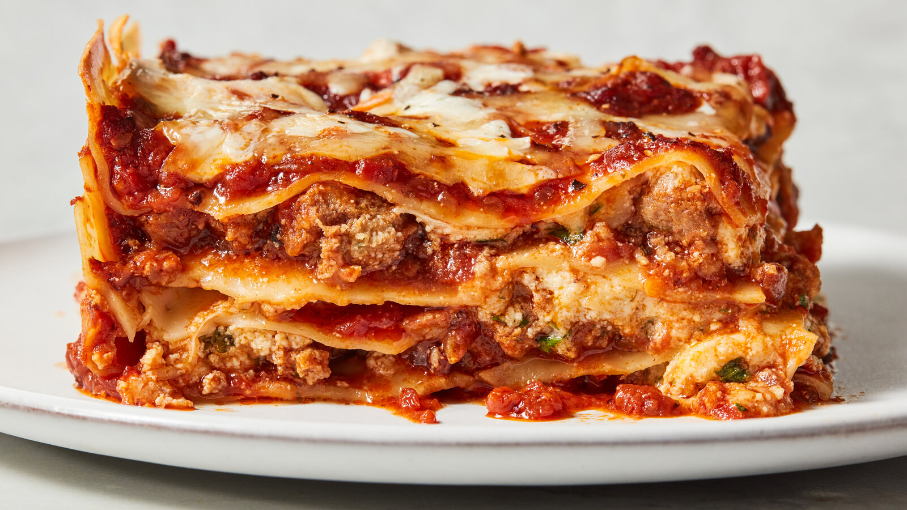

Lasagna

Lasagna is a comforting, layered dish of tender pasta sheets stacked
with rich meat or vegetable sauce, creamy béchamel or ricotta, and
melted cheese that binds everything together. Baked until bubbling
and golden on top, it delivers a hearty balance of savory, creamy,
and slightly crisp textures in every bite.
Ingredients:
- Lasagna noodles
- Tomato sauce
- Ground beef
- Ricotta cheese
- Mozzarella cheese
Steps:
- Cook the lasagna noodles in boiling salted water until just tender,
then drain.
- Brown the ground beef in a pan and stir in the tomato sauce.
- Layer noodles, meat sauce, ricotta, and mozzarella in a baking
dish.
- Repeat layers until ingredients are used, ending with mozzarella on
top.
- Bake at 375°F (190°C) for 35–40 minutes until bubbly and lightly
golden.
Home